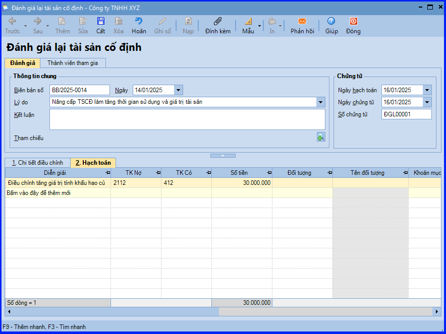

Hướng dẫn cách đánh giá lại Tài sản cố định trên phần mềm Misa
Khi có nhu cầu đánh giá lại, bộ phận kế toán sẽ phát sinh một số hoạt động sau:
- Thành lập hội đồng đánh giá gồm kế toán TSCĐ, Giám đốc hoặc kế toán trưởng, đại diện bộ phận sử dụng
- Hội đồng thực hiện đánh giá và ghi giá trị tính khấu hao và thời gian sử dụng mới của TSCĐ vào biên bản đánh giá lại TSCĐ
- Kế toán căn cứ vào Biên bản đánh giá thực hiện hạch toán điều chỉnh tăng, giảm giá trị tính khấu hao hoặc thời gian sử dụng của TSCĐ
Các trường hợp cần đánh giá lại TSCĐ
- Nâng cấp TSCĐ làm tăng thời gian sử dụng hoặc giá trị tài sản
- Tháo dỡ một hay một số bộ phận tài sản giảm giá trị tài sản
- Đánh giá lại tài sản cố định để xác định giá trị doanh nghiệp
- Đánh giá lại tài sản nhằm mục địch liên doanh, góp vốn, chia tách, hợp nhất, giải thể.
- Đánh giá lại theo yêu cầu kê biên tài sản của cơ quan nhà nước có thẩm quyền
1. Cách định khoản đánh giá lại TSCĐ
- Trường hợp giá trị đánh giá nhỏ hơn giá trị TSCĐ được mang đi đánh giá
- Nợ TK 412…
- Có TK 211, 213, 217
- Trường hợp giá trị đánh giá lớn hơn giá trị TSCĐ được mang đi đánh giá
- Nợ TK 211, 213, 217
- Có TK 412…
2. Hướng dẫn thực hiện đánh giá lại TSCĐ trên phần mềm Misa
Nghiệp vụ “Đánh giá lại TSCĐ” được thực hiện trên phần mềm Misa như sau:
- Vào phân hệ "Tài sản cố định" => chọn tab "Đánh giá lại" => chọn chức năng "Thêm".
- Chọn lý do đánh giá tương ứng với mục đích sau khi đánh giá.
- Tại tab "Chi tiết điều chỉnh": khai báo thông tin giá trị còn lại, thời gian sử dụng còn lại, hao mòn lũy kế,… sau điều chỉnh.
.png "Cách đánh giá lại TSCĐ trên Misa")
- Tại tab "Hạch toán": ghi nhận bút toán đánh giá lại TSCĐ.
- Các bạn ấn "Cất".

KẾ TOÁN DIỆU TÂM chúc các bạn làm tốt!
=============================
Nếu bạn muốn thành thạo các kỹ năng làm kế toán trên phần mềm Misa
Thì bạn có thể tham khảo "Khóa Học Thực Hành Kế Toán Trên Phần Mềm Misa" tại Công ty đào tạo Kế Toán Diệu Tâm
Trong khóa học này, bạn sẽ được dạy cách lên sổ sách, lập báo cáo tài chính trên phần mềm Misa
Chi tiết về chương trình đào tạo bạn xem tại đây nhé: Khóa học thực hành kế toán trên Misa
=============================
=============================
Nếu bạn muốn thành thạo các kỹ năng làm kế toán trên phần mềm Misa
Thì bạn có thể tham khảo "Khóa Học Thực Hành Kế Toán Trên Phần Mềm Misa" tại Công ty đào tạo Kế Toán Diệu Tâm
Trong khóa học này, bạn sẽ được dạy cách lên sổ sách, lập báo cáo tài chính trên phần mềm Misa
Chi tiết về chương trình đào tạo bạn xem tại đây nhé: Khóa học thực hành kế toán trên Misa
=============================